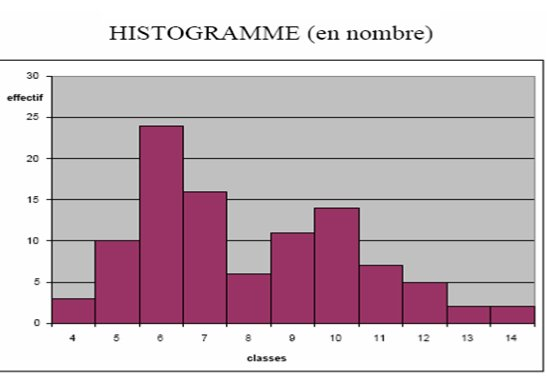
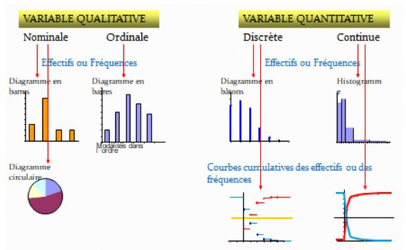

Descriptive statistics
- Essentials
- Introduction
- Vocabulary & variables
- Frequencies & classes
- Graphs
- Mode, mean, median
- Dispersion
- Two variables
- Exam traps
- Self-check
- Variables: qualitative (nominal or ordinal) vs quantitative (discrete = counts; continuous = measures such as height, weight, age, rates).
- Classes: number nc = 1 + (10/3)·log₁₀ n; width (amplitude) a = e / nc with range e = xmax − xmin.
- Mean x̄ = (1/n) Σ nixi, with xi = the class centre for a continuous variable.
- Variance V = (1/n) Σ nixi² − x̄²; standard deviation σ = √V; CV = 100·σ/x̄.
- Median (discrete): n = 2p+1 → xp+1; n = 2p → (xp + xp+1)/2. Me = Q₂. IQR = Q₃ − Q₁.
- Continuous mode: Mo = ai + a·d₁/(d₁ + d₂) in the modal class; continuous median/quartiles by interpolation in the class that contains n/2 (n/4, 3n/4).
- Two variables: cov = (1/n) ΣΣ nijxiyj − x̄ȳ; ρ = cov/(σXσY), −1 ≤ ρ ≤ 1; regression of Y on X: a = cov/σX², b = ȳ − a·x̄.
I. Introduction p. 7–13
- The module has two units: Biostatistics I = descriptive statistics (this lesson) and Biostatistics II = probability calculations, probability distributions and inferential ("differential") statistics.
- Three phases in the history of statistics:
- Antiquity → end of the 19th century: mainly counting techniques.
- Late 19th century → 1960s: mathematical statistics, mainly the English school (K. Pearson, W. Gosset "Student", R. Fisher, J. Neyman).
- Since the 1960s: considerable growth thanks to computational and graphical tools (medicine, agronomy, sociology, industry…).
II. Statistical vocabulary p. 14–18 2017-18 (EMD2) · 2018-19 · 2021-22
| Term | Meaning |
|---|---|
| Population (Ω) | The set under consideration in the study |
| Individual / statistical unit (ω) | Each element of the population |
| Sample (échantillon) | Subset of the population on which the observations are made |
| Census (recensement) | Survey where the observed sample is the entire population (exhaustive) |
| Survey (sondage) | Survey where the sample is a proper subset of the population (non-exhaustive) |
| Characteristic (caractère) | The property observed in the population or sample; when it is the subject of the study it is the statistical variable |
| Modalities (modalités) | The different values taken by a variable |
| Variable | Characteristic common to all individuals whose value varies from one individual to another |
Types of statistical variables
III. Frequencies and forming the classes p. 19–23 2017-18 (EMD2) · 2018-19 · 2022-23 · 2025-26
| Indication | Notation | Rule |
|---|---|---|
| Frequency (count) of class i | ni | Σ ni = n (total number of individuals) |
| Relative frequency | fi = ni/n | 0 ≤ fi ≤ 1, Σ fi = 1 |
| Percentage | pi = fi × 100 | Σ pi = 100% |
| Increasing cumulative count (croissant) | n↗ = n₁ + … + ni | the last one equals n |
| Decreasing cumulative count (décroissant) | n↘ = nk + nk−1 + … + ni | the first one equals n |
Notation: X = the character studied, n = sample size, k = number of classes (modalities), x₁…xk the modalities with counts n₁…nk p. 27–28.
How to form the classes
- Arrange the data in increasing order and compute the range: e = xmax − xmin.
- Number of classes (n = number of observations):
nc = 1 + 103 log₁₀(n)
- Class width = amplitude:
a = enc
IV. Graphical representations p. 24–26 2017-18 (EMD2)


V. Univariate series — position parameters (central values) p. 29–44 2017-18 (EMD2) · 2018-19 · 2021-22 · 2022-23 · 2023-24 · 2024-25 · 2025-26
The lesson's two worked examples p. 31–34
| Ex. 1 — discrete: Biostatistics notes of 38 students | ||||
|---|---|---|---|---|
| xi | ni | n↗ | n↘ | nixi |
| 3 | 4 | 4 | 38 | 12 |
| 8 | 7 | 11 | 34 | 56 |
| 13 | 12 | 23 | 27 | 156 |
| 15 | 10 | 33 | 15 | 150 |
| 18 | 5 | 38 | 5 | 90 |
| Σ | 38 | 464 (Σnixi² = 6382) | ||
| Ex. 2 — continuous: hemoglobin (g/L) of 56 women | ||||
|---|---|---|---|---|
| Class | ni | centre | n↗ | nixi |
| [100; 110[ | 8 | 105 | 8 | 840 |
| [110; 120[ | 10 | 115 | 18 | 1150 |
| [120; 130[ | 20 | 125 | 38 | 2500 |
| [130; 140[ | 12 | 135 | 50 | 1620 |
| [140; 150[ | 6 | 145 | 56 | 870 |
| Σ | 56 | 6980 (Σnixi² = 1 190 300) | ||
1. Mode p. 29–30, 41–43
- 1, 1, 4, 8, 7, 7, 7, 15, 18, 10, 5, 13 → Mo = 7. 6, 4, 7, 12, 11, 16, 17, 14, 18 → no mode. 5, 5, 5, 7, 9, 8, 8, 8, … → Mo₁ = 5 and Mo₂ = 8: two modes = bimodal distribution.
- Modal class (continuous variable): the class at the maximum of the histogram (unimodal distribution).
Ex. 2: modal class [120; 130[, d₁ = 20 − 10 = 10, d₂ = 20 − 12 = 8 → Mo = 120 + 10 × 10/18 = 125.56.
2. Arithmetic mean p. 35–37
Ex. 1: x̄ = 464/38 = 12.21. Ex. 2: x̄ = 6980/56 = 124.64 g/L.
3. Median p. 38–40, 44
| Discrete variable | Me |
|---|---|
| n odd: n = 2p + 1 | xp+1 |
| n even: n = 2p | (xp + xp+1) / 2 |
Ex. 1: n = 38 = 2 × 19 → Me = (x₁₉ + x₂₀)/2 = (13 + 13)/2 = 13.
Continuous variable: find the class where the increasing cumulative count reaches n/2, then interpolate:
Ex. 2: n/2 = 28 ∈ [120; 130[ → Me = 120 + 10 × (28 − 18)/(38 − 18) = 125.
VI. Dispersion parameters p. 45–52 2017-18 (EMD2) · 2018-19 · 2021-22 · 2022-23 · 2023-24 · 2024-25 · 2025-26
1. Variance and standard deviation p. 45
The most used measure of dispersion, with the quadratic mean deviation (standard deviation). V(X) = σX² = the square of the standard deviation:
2. Coefficient of variation p. 46
Relative dispersion, in %:
3. Quartiles and interquartile range p. 47–49
- 3 quartiles split the series into 4 parts of equal frequency: Q₁ (lower quartile: 25% of values below, 75% above), Q₂ = median (50/50), Q₃ (upper quartile: 75% below, 25% above).
- Interquartile range: IQR = Q₃ − Q₁.
- Discrete: Q₁ = the value of rank n/4, Q₃ = rank 3n/4 — a non-integer rank is rounded up. Ex. 1: n/4 = 9.5 → 10 → Q₁ = x₁₀ = 8; Q₂ = x₁₉ = 13; 3n/4 = 28.5 → 29 → Q₃ = x₂₉ = 15; IQR = 7.
- Continuous: same interpolation as the median, with n/4 and 3n/4. Ex. 2: n/4 = 14 ∈ [110; 120[ → Q₁ = 110 + 10 × (14 − 8)/(18 − 8) = 116; 3n/4 = 42 ∈ [130; 140[ → Q₃ = 130 + 10 × (42 − 38)/(50 − 38) = 130.33.
4. Quantiles p. 50–52
Quantiles = the values of the variable that bound a partition into classes of equal frequency: median → 2 parts, quartiles → 4, deciles → 10, percentiles (centiles) → 100, … n equal parts.
VII. Study of two statistical variables p. 53–60 2017-18 (EMD2) · 2018-19 · 2023-24 · 2024-25
Two quantitative characters X and Y measured on the same population of size n. First look at the scatter plot (nuage de points), then summarise the data in a contingency table:
| X \ Y | y₁ … yj … yl | Marginal |
|---|---|---|
| xi | ni1 … nij … nil | ni. = Σj nij (row total) |
| Marginal | n.j = Σi nij (column total) | n |
- nij = partial (joint) frequency of the couple (xi, yj); ni. and n.j = marginal frequencies.
- Marginal means: x̄ = (1/n) Σ ni.xi, ȳ = (1/n) Σ n.jyj (use the row/column totals).
| Notion | Formula / rule |
|---|---|
| Independence p. 56 | X and Y independent ⇔ for all i, j: fij = nij/n = fi. × f.j = (ni./n)(n.j/n) |
| Covariance | cov(X, Y) = (1/n) ΣiΣj nijxiyj − x̄ȳ |
| Independence ⇒ cov | Independent ⇒ cov = 0; the converse is false. cov = 0 ⇒ X, Y are uncorrelated (non corrélées). |
| Linear correlation coefficient p. 58–59 | ρ(X, Y) = cov(X, Y) / (σXσY); −1 ≤ ρ ≤ 1; invariant under a change of origin and unit; ρ = 0 ⇒ uncorrelated |
| Y = aX + b | cov(X, Y) = a·σX²; σY² = a²σX² (b disappears); ρ = +1 or −1 depending on the sign of a |
| Regression line of Y on X p. 60 | Y = aX + b with a = cov(X, Y)/σX² and b = ȳ − a·x̄ (the line passes through (x̄, ȳ)) |
Exam traps
- Standard deviation written without the square root, or without "− x̄²", or with ȳ instead of x̄ — false: σ = √[(1/n)Σnixi² − x̄²]. 2018-19
- Covariance = (1/n)ΣΣnijxiyj alone — false: subtract x̄ȳ. 2018-19
- For n = 2p + 1, Me = (xp + xp+1)/2 — false: that's for n even; n odd → xp+1. 2022-23
- If Y = aX + b, σY² = a²σX² + b — false: a shift doesn't change dispersion. 2023-24
- "Population = 66 students" from a decreasing-cumulative table — false: n is the first decreasing cumulative count (25), not the sum of the column. 2 sessions
- Mode = the last value or the one with the largest cumulative count — false: recover the counts first, then take the largest count. 2 sessions
- A continuous variable is shown by a pie chart / bar chart / stick diagram — false: histogram. 2017-18
- Sturges with log₁₀ a or n + … — false: nc = 1 + (10/3)log₁₀ n. 2017-18
- A measured concentration is "quantitative discrete" — false: continuous; a number of unfit bottles is discrete. 2018-19 · 2021-22
- Pairs like (mean; 19.63) offered as (mean; σ) — 19.63 is the variance (σ ≈ 4.43). 2023-24 · 2024-25
- A positive correlation offered when the covariance is negative — ρ always has the covariance's sign. 2024-25